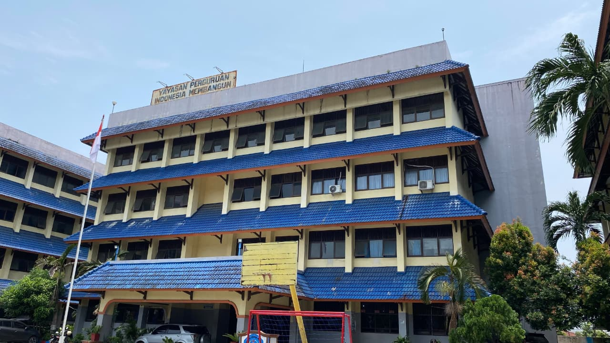
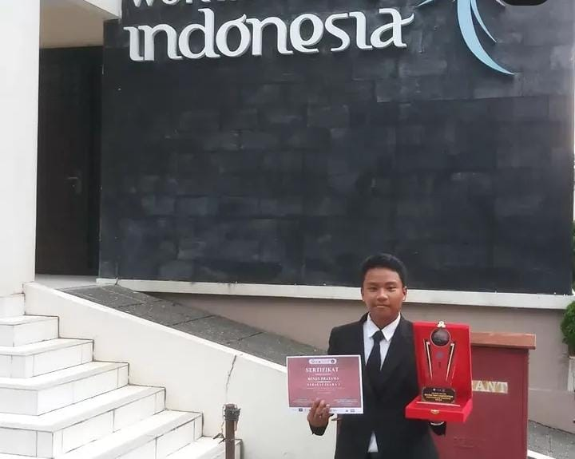
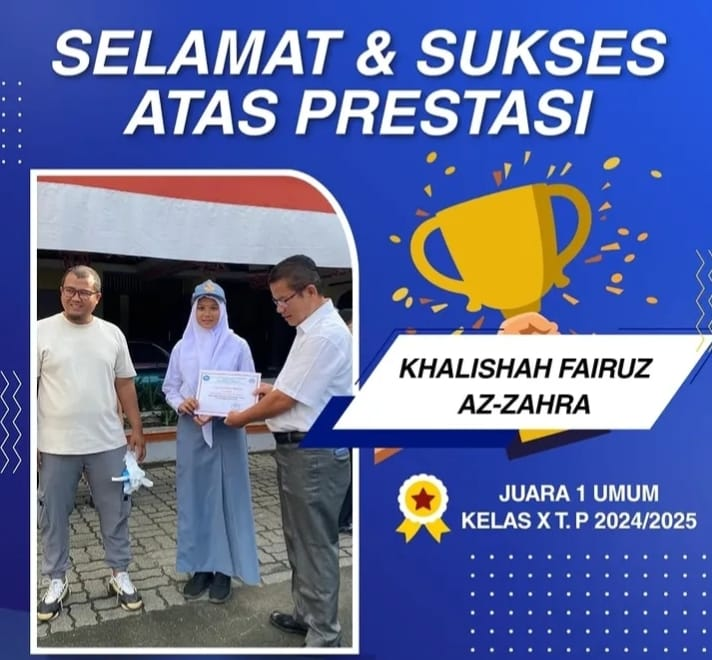
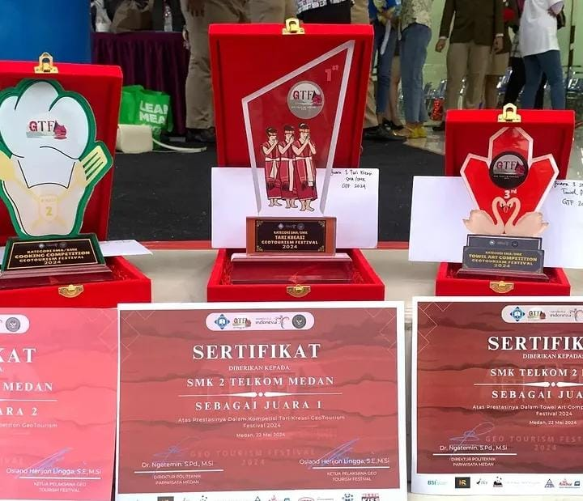
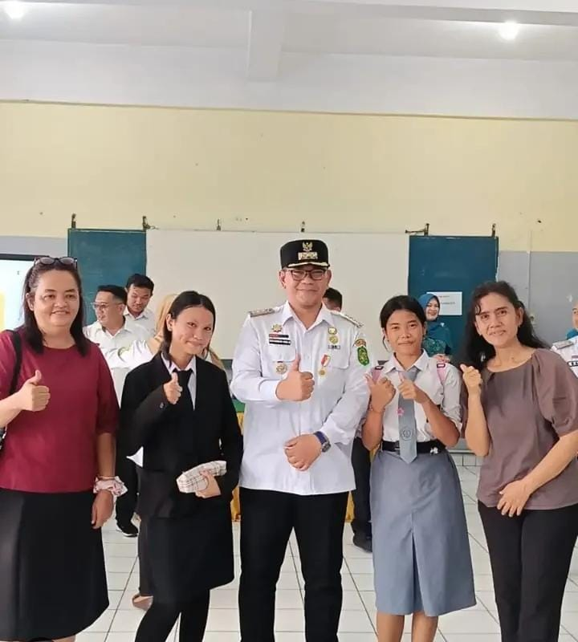
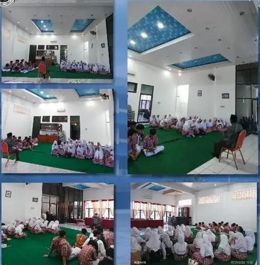
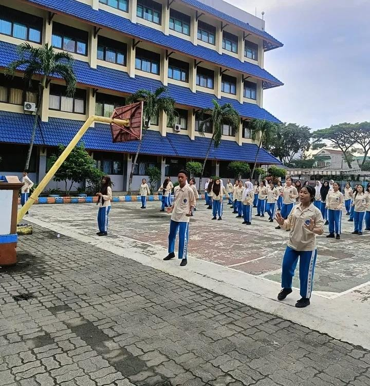
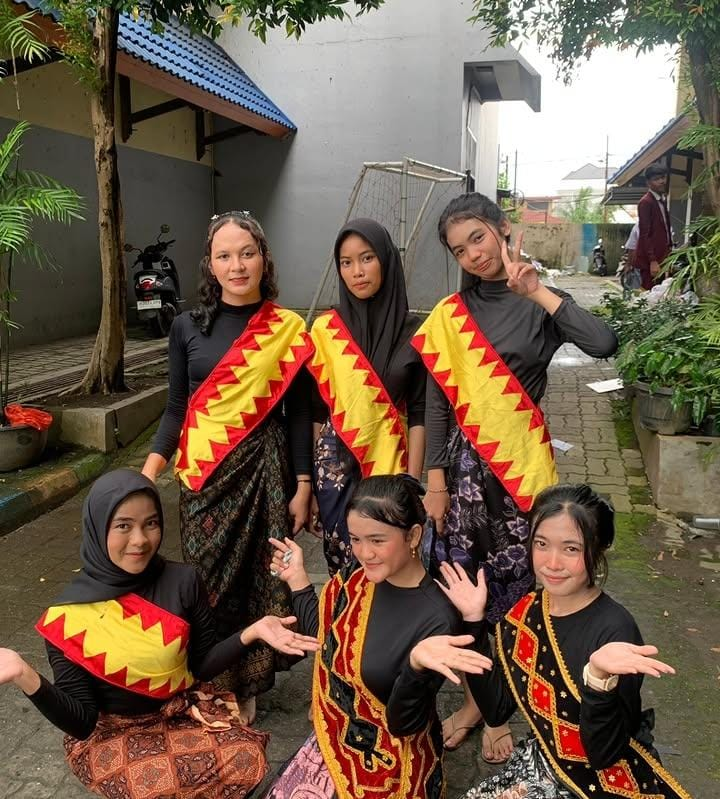
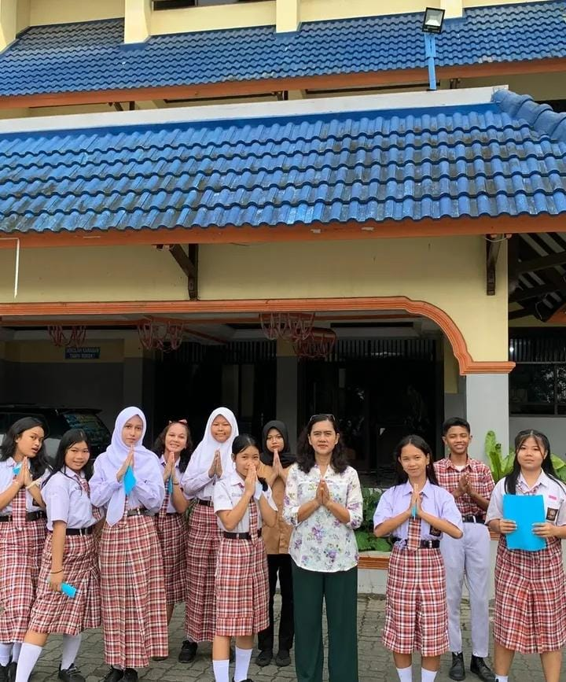

01 · ARAH
10 poin
Visi Sekolah
- Beriman dan bertakwa
- Berkarakter dan berkewargaan
- Kompeten
- Kritis
- Kreatif
- Kolaboratif
- Mandiri
- Sehat
- Komunikatif
- Siap bekerja, melanjutkan pendidikan, dan berwirausaha
Ketik kata kunci, misalnya jurusan atau kantin.
Selamat Datang di
SMK BISNIS MANAJEMEN DAN PARIWISATA YAPIM MEDAN
Membentuk generasi unggul, berkarakter, dan siap bersaing di dunia kerja melalui pendidikan vokasi yang berkualitas.
Jelajahi Sekolah Kami
Tentang Kami

Salam sejahtera bagi kita semua.
Terima kasih sudah berkunjung ke laman resmi SMKS Indonesia Membangun 2 Medan. Sekolah kami hadir untuk menyiapkan lulusan yang kompeten, berkarakter, dan siap bekerja maupun melanjutkan pendidikan.
Melalui dua program keahlian, Akuntansi dan Administrasi Perkantoran, siswa belajar melalui teori dan praktik nyata dengan didampingi guru yang berpengalaman di bidangnya.
Kami percaya setiap anak punya potensi. Tugas kami menumbuhkannya. Selamat bergabung, dan mari bertumbuh bersama di YAPIM.

Sejarah Sekolah
SMK Bisnis Manajemen dan Pariwisata YAPIM Medan merupakan bagian dari YAPIM Taruna Medan yang terus berkembang dalam memberikan pendidikan kejuruan bagi generasi muda.
Sekolah ini dikembangkan sejak tahun 1996 dengan tujuan memberikan pendidikan yang mengutamakan keterampilan, kedisiplinan, tanggung jawab, serta kesiapan siswa memasuki dunia kerja.
Seiring perkembangan kebutuhan dunia pendidikan dan dunia kerja, sekolah terus melakukan pengembangan pada pembelajaran, fasilitas, kegiatan siswa, serta kerja sama dengan dunia usaha dan dunia industri.
Arah Sekolah
Dibuat seperti kartu informasi agar isinya tetap lengkap, tetapi tidak memenuhi layar sekaligus.
Struktur Organisasi
Susunan pengelolaan sekolah ditampilkan sebagai ikon agar tetap jelas meskipun belum tersedia foto setiap pengurus.
Kompetensi Keahlian
SMKS Indonesia Membangun 2 Medan
Prestasi Siswa
Geser ke samping untuk melihat semua prestasi. Klik salah satu untuk memperbesar.



Kota Medan • 2024
Dokumentasi Kegiatan
18 September 2026

sosialisasi KTP Lihat detail17 September 2026

pengajian Lihat detail17 September 2026

senam pagi bersama di lapangan sekolah Lihat detail10 Desember 2025

Menampilkan tarian dari Suku Nias Lihat detail30 November 2025

membawakan English Day Lihat detail11 Juli 2025
Dokumentasi
Kegiatan belajar, praktik jurusan, upacara, sampai lomba antar sekolah, semuanya terekam di sini.
“Unggul dalam prestasi,
bersama kita bisa” YAPIM TARUNA JAYA!!!
Semangat yang kami bawa setiap hari, dari ruang kelas sampai tempat praktik kerja.
Media Sosial
Lihat kegiatan terbaru siswa dan sekolah. Tiga postingan ditampilkan terlebih dahulu, sisanya tinggal digeser ke kiri atau kanan.
@SMK_BM_PAR_YAPIMEDANFasilitas Sekolah
Berbagai fasilitas yang mendukung proses belajar, praktik, dan kegiatan siswa.
Ekstrakurikuler
Pilihan kegiatan yang membantu siswa mengembangkan minat, bakat, karakter, dan pengalaman.
Hubungi Kami
Kami senang menerima kunjungan, pertanyaan, maupun kerja sama. Silakan pilih cara yang paling mudah untukmu.